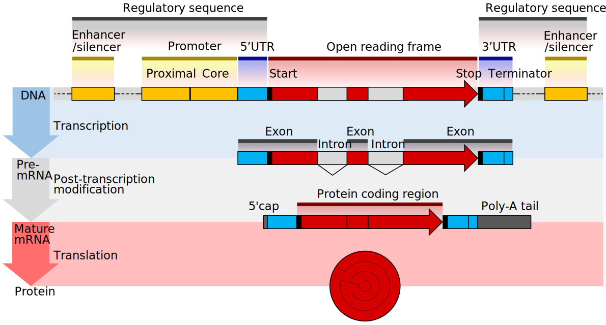
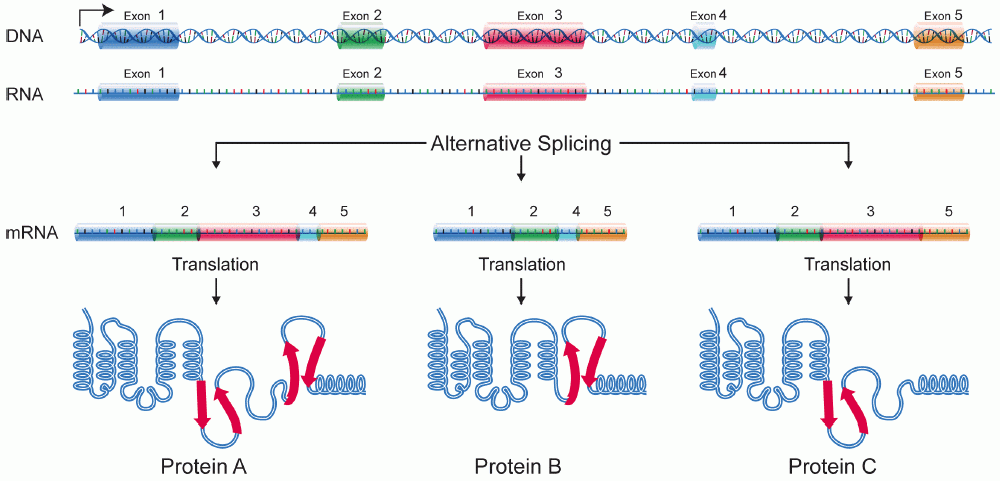
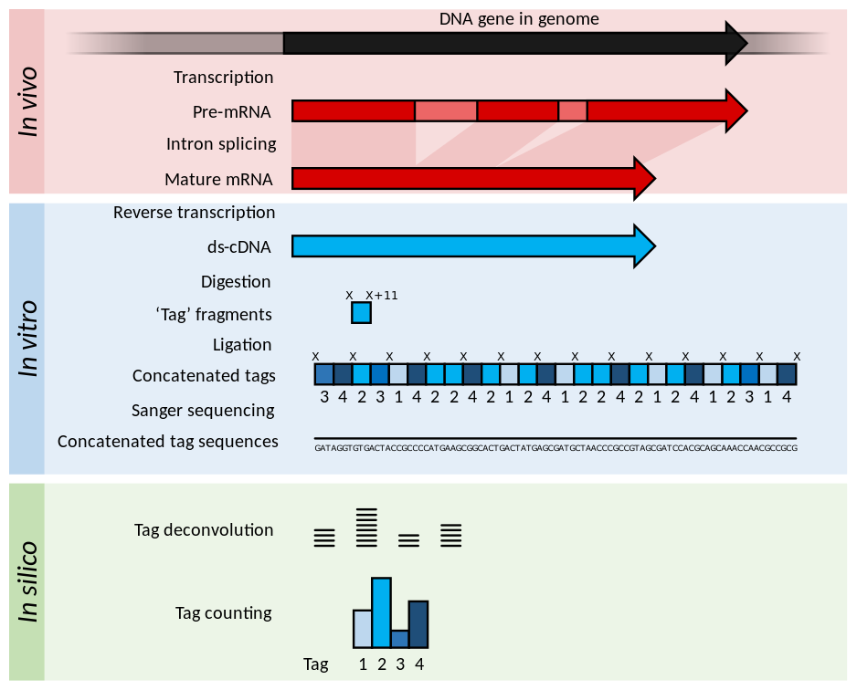
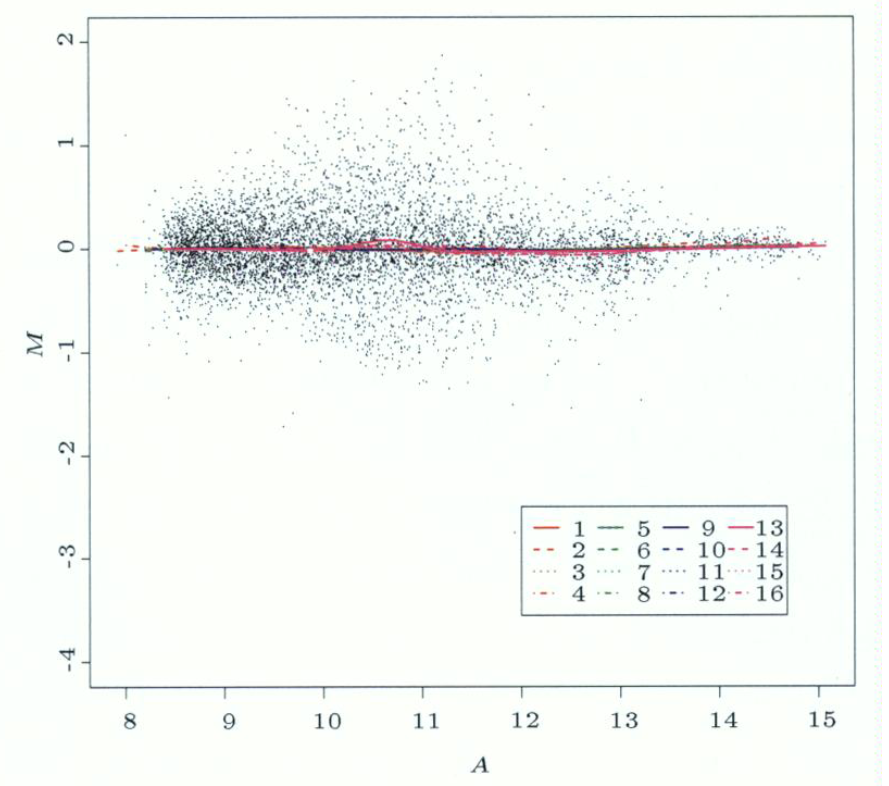
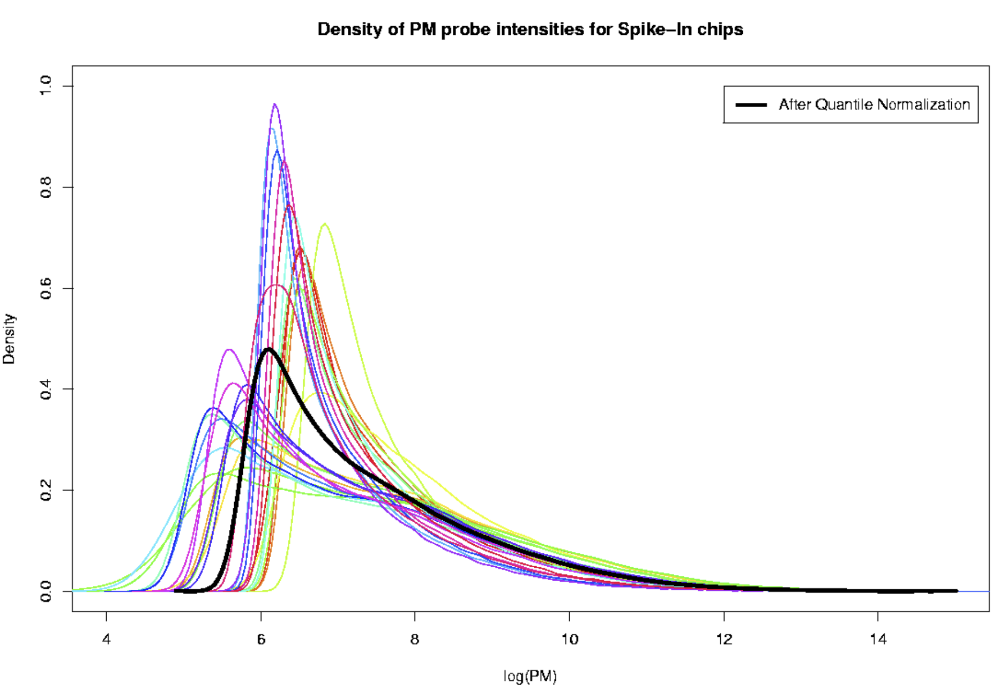

Transcriptomics: Lecture 1
Frontiers of Biotechnology: Bioinformatics and Systems Modelling
The University of Adelaide
stevie.pederson@thekids.org.au
The Kids Research Institute Australia
September 1, 2025
Helpful Links
Welcome To Country
I’d like to acknowledge the Kaurna people as the traditional owners and custodians of the land we know today as the Adelaide Plains, where I live & work.
I also acknowledge the deep feelings of attachment and relationship of the Kaurna people to their place.
I pay my respects to the cultural authority of Aboriginal and Torres Strait Islander peoples from other areas of Australia, and pay our respects to Elders past, present and emerging, and acknowledge any Aboriginal Australians who may be with us today
Introduction To Transcriptomics
Introduction
- Postdoctoral Bioinformatician, Black Ochre Data Labs, Adelaide
- Working in collaboration with members of the SA Aboriginal community
- Multi-omics project to identify and address the underlying causes of high T2D rates and complications
- Using genomics, epigenomics, transcriptomics and other layers
- My focus is on the transcriptomics layer
Why Transcriptomics?
- DNA can be described as being like a giant book of instructions
- Some regions are defined as genes
- Originally considered to be the basic unit of inheritance
- Now commonly used to describe a region of DNA transcribed into RNA

By Thomas Shafee - Own work, CC BY 4.0, Wikimedia Link
Why Transcriptomics?
- DNA \(\rightarrow\) mRNA \(\rightarrow\) Proteins
- Commonly referred to as the Central Dogma of Biology
- Proteins are the workhorses of the cell & body
- Do most of the work, and are responsible for most of the structure
- Examples like keratin (hair), haemoglobin (oxygen transport) etc
- ncRNAs are also highly functional
- Ribosomal RNA (rRNA) + tRNA \(\rightarrow\) translation from mRNA to Protein
- microRNAs play a role in gene-regulation via mRNA stability
Why Transcriptomics?

- Most RNA is single-stranded but can have extremely complex structure
- Shown is a 2kb region from the lncRNA Xist (17kb in total)
- Coats the entire X chromosome during X inactivation
- Also interacts with the antisense lncRNA Tsix
Why Transcriptomics?
Definition
Based on Wang, Gerstein, and Snyder (2009)
The transcriptome can be defined as the complete set of (RNA) transcripts in a cell, or a population of cells, for a specific developmental stage or physiological condition
- Transcriptomics is simply the study of the transcriptome
- Can be the entire RNA content of a cell (or cells) or a subset of molecules (e.g. mRNA, miRNA)
Why Transcriptomics?
- Is a snapshot of the dynamic biological processes associated with a biological question
- Use to make inference about these processes
- Identify therapeutic targets for Cardiovascular Disease
- Biomarkers for CAR-T cells
- Key drivers of correlated gene networks
- Early drivers of neurodegeneration in Alzheimer’s
- Assumed to be low-level
- DNA \(\rightarrow\) RNA \(\rightarrow\) Protein \(\rightarrow\) Metabolites, Signalling molecules, etc …
Why Transcriptomics?
- Is the lowest molecular level where quantity becomes a key aspect
- Highly-expressed, or low-expressed genes are important
- Changes in response to stimulus impact gene expression levels
- Much of the early transcriptomic analyses were quantitative
- Sequence variation often captured at DNA-level
- Now extending to transcript structure and modifications
- Identification of fusion transcripts, RNA-methylation etc
Why Transcriptomics?
- Early techniques were often using large numbers of cells
- Often multiple cell types within a biological sample
- Modern techniques are incredibly detailed
- Single-Cell RNA characterises exact cell types and cell trajectories
- Spatial transcriptomics used to identify co-located cells in tissue
- Identify cell-cell signalling in situ
What Is Transcription
Definition
Transcription is the process of making an RNA copy of a gene sequence

Steps of Transcription
- RNA polymerase binds to the promoter along with \(\geq1\) transcription factors
- RNA polymerase creates a transcription bubble
- separates the two DNA strands, breaking hydrogen bonds between complementary DNA nucleotides.
- RNA polymerase adds RNA nucleotides
- complementary to the antisense DNA strand.
- RNA sugar-phosphate backbone forms
- Hydrogen bonds of the RNA–DNA complex break freeing the newly synthesized RNA strand.
Steps of Transcription
If the cell is a eukaryotic cell
- RNA processing
- This may include polyadenylation, capping and splicing
- Occurs during (or immediately after) transcription
- RNA Localisation
- The RNA may remain in the nucleus or exit to the cytoplasm through the nuclear pore complex
- Eukaryotic mRNA, miRNA & snRNA transcription uses RNA Polymerase II
- RNA Pol I: rRNA
- RNA Pol III: tRNA, 5S RNA some small RNAs
Eukaryotic mRNA Processing
- Nuclear mRNA have 5’ cap added
- Protects single-stranded mRNA from degradation
- Regulates nuclear export
- Promotes translation
- mRNAs are polyadenylated at the 3’ end
- Also protects from degradation
- Aids in transcription termination, export and translation
- Introns are spliced out as required
Eukaryotic mRNA Processing
Taken from Shafee and Lowe (2017)
Alternate Transcripts and Isoforms
Image by the National Human Genome Research Institute
Transcriptome Resources
- Reference Transcriptomes & Genomes are now commonly available
- Incorporate experimentally derived & predicted sequences + loci
- Gencode1 provide highest quality for mouse & human
- Release 48 (GRCh38): 78,686 genes + 385,669 transcripts
- Other organisms from Ensembl, RefSeq, UCSC etc
- Zebrafish, Rat, Chicken, Drosophila, Wheat, Yeast, E. Coli etc
- Sometimes we build novel transcriptomes from specific tissues
- e.g. sea snake venom gland, shiraz fruit
Early Transcriptomics
Northern Blotting
- Northern blot (Alwine, Kemp, and Stark 1977) extended DNA-based methods (i.e Southern blot) \(\implies\) Earliest single-gene method
- Gel Electrophoresis then hybridisation with labelled probe
- Requires some knowledge of RNA sequence
- Images scanned \(\rightarrow\) Densitometric Analysis for crude quantitation
- Possible for different isoforms to be detected
- Sequence dependent
RT-qPCR
- “Gold-standard” for measurement of transcription levels
- Single gene \(\implies\) not a high-throughput technique
- Targets a single transcript region with specific primers to produce cDNA
\(\rightarrow\) Polymerase Chain Reaction (PCR) - Each PCR cycle approximately doubles the target region
- cDNA produced is identified using fluorophores
- Fluorescence doubles with each cycle
- Once fluorescence passes a detection threshold, the cycle number is recorded
- Known as the Cycle Threshold (CT) value
RT-qPCR

A 10-fold dilution series
RT-qPCR
- Higher CT values \(\implies\) lower numbers of target molecule at the beginning
- These can be used to estimate and compare abundance levels (i.e. gene expression)
- Is vulnerable to technical artefacts (e.g. pipetting variability)
- Often includes one or more “housekeeper” genes thought to be stably expressed
- CT values are normalised to the housekeeper genes \(\implies \Delta C_T\)
- log2 transformed values are used: \(\Delta C_{T_g} = \log_2 C_{T_g} - \log_2 C_{T_{hk}}\)
- Comparison between conditions is the change in \(\Delta C_T \implies \Delta\Delta C_T\)
- Represents change on the log2 scale, i.e. log fold-change
Expressed Sequence Tags
- The first attempt at capturing the larger transcriptome was ESTs (Adams et al. 1991)
- Identified 609 human brain mRNA sequences
- Selected for polyA-mRNA then reverse transcribed
- Used random primers \(\rightarrow\) Sanger Sequencing
- 10 years before the Human Genome Project
- Gene discovery was a hot topic
Sanger Sequencing

Estevezj, CC BY-SA 3.0, via Wikimedia Commons
SAGE & CAGE
- First high-throughput quantification method was Serial Analysis of Gene Expression (SAGE) (Velculescu et al. 1995)
- mRNA \(\rightarrow\) cDNA using biotinylated primers
- cDNA bound to beads (using biotin) & cleaved
- 11mer “tags” were ligated into long sequenced using linker sequences
- Sequenced using Sanger Sequencing
- Deconvolution & counting

SAGE & CAGE
- The terminology of counting tags is still used by some manuals & software
- Statistical models still form the basis of modern transcriptomics
- Was described as Digital Gene Expression (DGE)
- The term DGE is still used but easily confused with Differential Gene Expression
- A variant called Cap Analysis of Gene Expression (CAGE) targeted the 5’ Cap
- Heavily used by FANTOM project (Abugessaisa et al. 2020) to identify exact Transcription Start Sites (TSS)
Microarray Technology
- Microarrays represent the birth of modern transcriptomics
- Thousands of genes could be measured simultaneously!!!
- Tens of thousands of public datasets \(\implies\) still being mined
- Established concurrently with the Human Genome Project (1990-2003)
- Databases & complete reference sequences become widely available
- All require fluorescently labelled cDNA copies of RNA
- Hybridised to the array using probes for known sequences
- \(\uparrow\) fluorescence \(\implies \uparrow\) RNA abundance
Microarray Technology
- All microarrays follow the same basic process
Image courtesy of Squidonius, Public domain, via Wikimedia Commons
Two Colour Arrays
- Two colour microarrays were printed microscope slides
- Known probe sequences were printed to the surface in defined locations
- 60-75mer oligonucleotide probes
- Highly customisable by project
- Two samples per array
- One sample labelled with Cy5 (Red)
- Other sample labelled with Cy3 (Green)
- Scanned at 570nm (Cy3) and 670nm (Cy5)

MA Plots

- Mean of Differences
\(M = \log_2(\frac{R}{G}) = \log_2(R) - \log_2(G)\) - Average Signal
\(A = \frac{1}{2}\log_2(RG) = \frac{\log_2(R) + \log_2(G)}{2}\)
- Used to assess any bias
- Also to show DE genes
Single Channel Arrays
- Affymetrix Arrays became dominant
- Factory manufactured
- Standardised layout for each organism
- Single sample per array
- Only scanned at one frequency
- More genes/array
- 25mer probes targeting 3’ end of transcript
- Captured only intact transcripts

Single Channel Arrays

3’ Arrays
- Each 3’ exon targeted by 11 unique 25mer probes \(\implies\) a probeset
- Possible to detect different transcripts only if 3’ exons differ
- Perfect Match (PM) probes \(\implies\) exactly matches target sequence
- Known to capture off-target signal \(\implies\) non-specific binding
- Arrays included paired mismatch probes (MM) with a change at the 13th position
- Sometimes returned more signal than PM probes 🤪
- Gene-level expression estimate obtained taking a robust average across probeset
- Model also included BG signal (but not always from MM probes)
Whole Transcript Arrays
- Whole Transcript Arrays released by Affymetrix in mid-2000s
- Marketed as Exon Arrays and Gene Arrays
- Probes along entire transcript BUT \(\leq\) 4 probes/exon

Whole Transcript Arrays
- No successful methods for determining alternate isoform usage
- Most people reverted back to gene-level signal
- No real gains over 3’ Arrays beside more genes/array
- RNA-Seq appeared at a similar time & obliterated their market share
- Alternate isoform usage in RNA-seq is still considered a bit exploratory
Microarray Analysis
Single Channel Data
- We will have multiple arrays from each condition
- Biological Replicates (hopefully \(\geq4\) per condition)
- Want to find changed expression in response to our biological hypothesis
- Will the some arrays have higher/lower overall signal?
- Pipetting errors, hybridisation variability etc
- Two Initial Problems to solve
- Adjust for overall differences in signal \(\implies\) Normalisation
- Removal of Background Signal (non-specific binding + optical noise)
\(\implies\)Background Correction
Normalisation

- The variation here is technical
\(\implies\) not due to biology - Higher variance reduces power of statistical testing
- Can we reduce this?
- Quantile normalisation
Normalisation
- Quantile normalisation is perfect for arrays with probes and probesets
- Normalise probes, but estimate signal at the probeset level
- Find the lowest signal probe on each array
- Calculate the average signal across all arrays
- Give each of the probes the average signal
- Move to the next lowest signal probe until finished
- The lowest signal probes will be completely different across arrays
- Effectively randomises noise
- Leads to arrays with identical distributions
Normalisation


- Now we have identical distributions of signal across all arrays
- Equivalent to having identical amounts of source material (mRNA)
Background Correction
- Background Correction performed simultaneously with estimation of signal
- Robust Multichip Average (RMA) (Irizarry et al. 2003)
- Estimates signal for each array (\(\mu_i\))
- Model includes probe affinities (\(\alpha_j\))
- Doesn’t include MM probes
- Fitted using robust statistics to reduce impact of outlier probes
\[ PM_{ij} = \mu_i + \alpha_j + \epsilon_{ij} \]
- Extended to GC-RMA (Wu et al. 2004) to include GC content of probes
Differential Expression Analysis
- A primary challenge is to detect where gene expression levels change in response to biological question
- Often control samples Vs treated samples
- Microarray data is normally distributed on the log2 scale
- Can fit standard regression models
- For Treat Vs Control \(\implies\) \(T\)-test for each gene
\[ H_0: \text{No difference in average gene expression levels}\\ H_A: \text{Some difference in average gene expression levels} \]
- NB: Experiments estimate the true expression level across a theoretical population
Differential Expression Analysis
- The Bioconductor package
limmais the industry standard (Smyth 2004)- Still heavily used for modern RNA-Seq data
- Models tailored to managing variances found in transcriptomic datasets
- After testing \(\rightarrow\) \(p\)-value for each gene
- Multiple testing becomes an issue (revise Steven Delean’s lecture)
Multiple Testing
- Researchers commonly use a \(p\)-value \(<0.05\) to claim evidence of significant change
- Often described as the rejection threshold \(\alpha = 0.05\)
A \(p\)-value represent the probability of observing data (i.e. evidence of change) as extreme, or more extreme than our data if \(H_0\) is true
- i.e. how likely are we to see our evidence of change if nothing’s actually happening
- Using \(\alpha = 0.05\) we will randomly see evidence as strong as observed (or stronger) about 1 in 20 times, if there’s really nothing happening
Multiple Testing
- If testing across 10,000 genes \(\implies\) 10,000 \(p\)-values
- If no change between groups in any gene (\(H_0\) is always true)
\(\implies\) about 500 genes will return \(p<0.05\) - These would be considered false discoveries, false positives or Type I Errors
- False negatives are Type II errors
| \(H_0\) True | \(H_0\) False | |
|---|---|---|
| Accept \(H_0\) | ✅ | Type II Error |
| Reject \(H_0\) | Type I Error | ✅ |
Multiple Testing
- Reducing false positives is vital \(\implies\) don’t want to waste research $$$
- An intuitive solution would be to use a lower value for \(\alpha\)
- Using \(\alpha = 0.01\) \(\implies\) 1 in 100 random \(p\)-values under \(H_0\)
\(\implies\) only 100 false discoveries in 10,000 genes - But this makes it harder for true positives to be identified
\(\implies\) more Type II errors (false negatives)
- Using \(\alpha = 0.01\) \(\implies\) 1 in 100 random \(p\)-values under \(H_0\)
- No perfect solution for minimising Type I errors without increasing Type II errors
The Bonferroni Correction
- A commonly used approach is the Bonferroni Correction
- \(\alpha\) is divided by the number of tests
\(\implies\) probability of one false discovery remains at the original \(\alpha\)- Known as Family Wise Error Rate (FWER) control
- For \(n=10,000\) genes we would use \(\alpha^* = \frac{0.05}{n} = 5\times10^{-6}\)
- The equivalent is to multiply all \(p\)-values by \(n\) to give adjusted \(p\)-values
- \(p_{adj} = \min(1, p \times n)\) ensures \(p\)-values are always \(\leq1\)
- Referred to as Bonferroni-adjusted \(p\)-values
The False Discovery Rate
- An alternative is to allow a set proportion of your results to be false positives
- Instead of controlling the FWER, we control the False Discovery Rate (FDR)
- Using \(\alpha = 0.05\) \(\implies\) 95% of results will be appropriate rejections of \(H_0\)
- Is an estimate of the true FDR
- Effectively allows a small amount of noise into our data
- For larger network-style or downstream analysis \(\implies\) signal drowns out noise
- Is almost always more powerful that the Bonferroni correction
- More power \(\implies\) more ability to find the true positives
The False Discovery Rate
- Most common FDR method is the Benjamini-Hochberg adjustment (Benjamini and Hochberg 1995)
- \(p\)-values are given rank \(i = 1, 2, \ldots, n\) where we have \(n\) tests (i.e. genes)
- Find maximum value of \(i\) where \(p_i \leq \alpha \frac{i}{n}\)
- FDR-adjusted \(p\)-values easily obtained using
Rp.adjust(p, method = "BH")
Closing Comments
- Microarray signal estimates follow a normal distribution (\(\mathcal{N}(\mu, \sigma)\)) with log-transformed
- We can apply linear regression models
- In a simple A vs B experiment \(\equiv\) \(T\)-tests
- Estimates of change from DE analysis often referred to as logFC (log fold-change)
- \(p\)-values are usually FDR-adjusted
- Gives best compromise of power vs error-rate control
Closing Comments
- Foundations built during the microarray era enabled analysis of RNA-Seq data
- RNA-Seq data is not normally distributed
- Core principles and methods developed during this era still apply
- Normalisation, DE analysis, multiple testing etc
- Many bioinformaticians from the microarray era are still very active
- A lot of development occurred in Australia (e.g. Prof Gordon Smyth, WEHI)
- Next generation have been trained & mentored at WEHI, USyd etc